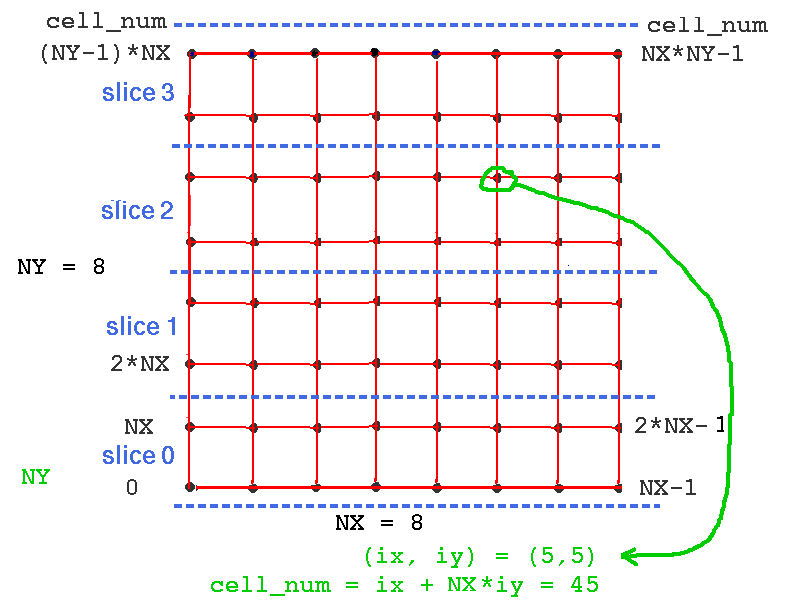

Next: Where do we go from here? Previous: Creating large networks with GENESIS Up: Table of Contents
The purpose of this tutorial is to show how to convert a network simulation that was developed for serial GENESIS to PGENESIS, in order to take advantage of the processing power offered by PCs with multicore or multiple processors. It uses the script RSnet.g from Tutorials/networks/RSnet simulation as the example network implemented with serial GENESIS, and par-RSnet.g from Tutorials/networks/par-RSnet simulation as the example of the parallelized version.
RSnet is a demonstration of a simple network, consisting of a grid of simplified neocortical regular spiking pyramidal cells, each one coupled with excitory synaptic connections to its four nearest neighbors. This might model the connections due to local association fibers in a cortical network. The RSnet example simulation was designed to be easily modified to allow you to use other cell models, implement other patterns of connectivity, or to augment by adding a population of inhibitory interneurons and the several other types of connections in a cortical network. Details of running the simulation and understanding the scripts are in the "Creating large networks with GENESIS" section of the GENESIS Modeling Tutorial.
The serial GENESIS version may be run from the networks/RSnet directory with the command "genesis RSnet.g".
The parallel version may be run in its default configuration from the networks/par-RSnet directory with "pgenesis -nodes 4 par-RSnet.g". In order to do this, PGENESIS and MPI should have been installed and tested. The Mini-tutorial on Using Parallel GENESIS on PCs with Multicore Processors gives further details.
This version of the script has been tested on a PC with a 2.4 GHz Intel Q6600 quad core processor, running GENESIS 2.3 and PGENESIS 2.3.1 under Fedora Linux. A typical execution time for a similarly configured version of RSnet.g was about 3.1 times longer than for par-RSnet.g. Because of the lack of inhibition, the network fires rapdily, generating many internode SPIKE messages. Thus, a speedup closer to the number of processor cores would likely be obtained in a network with more balanced inhibition and excitation.
Before continuing with this tutorial, it is important to have read BoG Chapter 21, Sections 21.4 - 21.6. These sections describe the use of nodes, zones, the syntax for executing commands on other nodes (e.g. "echo@0 {mynode}"), and the use of barriers. Note that zone identifiers are not needed here, because network simulations usually have only one zone per node. The network model example used in the BoG is based on the serial GENESIS genesis/Scripts/orient_tut simulation. The network used here is somewhat more typical of cortical network simulations, and doesn't have the complications of sweeping an input pattern across the retina.
At this point, it would be useful to open separate browser windows or tabs to view the two files RSnet.g and par-RSnet.g. At times, you may also want to consult the main index to the PGENESIS documentation, which has been installed in Tutorials/pgenesis-hyperdoc. The PGENESIS Reference Manual gives a summary of commands and variables specific to PGENESIS with links to their documentation files in Tutorials/pgenesis-hyperdoc/ref.
The main difference between a network simulation for serial GENESIS and one for PGENESIS is that the parallelized network is divided into slices that are distributed over multiple nodes. In order to understand how this is done in order to parallelize RSnet, it is useful to compare an outline of the logic of these two scripts.
In particular, the "worker nodes" are each assigned a slice of the network, and each one invokes one of these additional functions to perform certain actions for its slice. This is one of the significant differences between the two scripts. RSnet.g gives the commands for steps 1-5 above in the "Main simulation section". In par-RSnet.g, they have to be executed as a function call by each worker node for the cells on its slice. Thus, they are defined earlier as functions, and invoked in the main section. Function make_slice performs steps 1 - 3 and function connect_cells performs steps 4 and 5.
3. Main simulation section
After setting the simulation clock, it starts the parallel processes with the command:
paron -parallel -silent 0 -nodes {n_nodes}
At this point, there are n_nodes nodes, each running a copy of this script, and having access to the function definitions, but having its own elements and variables. In order to have the nodes execute only the functions that apply to them, the remainder of the script consists of a number of conditional statements that are executed only by appropriate nodes.
For example the conditional test "if (i_am_worker_node)" is used to cause each worker node to create its slice of the network, and make connections from each cell on the network to its specified targets. Note that these destination cells may lie across a slice boundary on another node.
In the script listing, note the use of barriers to make sure that all nodes finish before going on to the next step. The barrier (pgenesis-hyperdoc/ref/barrier.txt) command is documented in the PGENESIS Reference Manual. This part of the scripting requires some care. A miscounting of the barriers can cause a simulation to get stuck at a barrier, or to try to perform an operation on another node that isn't ready for it.
The ability to force other nodes to get stuck at a barrier is used in the final lines of the script:
// All the other nodes will get stuck at this barrier
// and the genesis prompt will be available in Node 0
if (!i_am_control_node)
barrier 15
end
Then the genesis prompt will be available within node 0, and can be used to issue commands on other nodes, such as
showfield@3 /network/cell[0]/soma x y z io_index
This reveals that the y coordinate of cell 0 on node 3 is not 0.0. Instead, it is displaced by an amount of 3*SEP_Y*NY/n_slices, and the added soma field io_index = 768. Using the information further below in this tutorial, you should be able to verify that this would be cell 768 on the unsliced network, and that these are the correct coordinates.
This section of the script defines the usual global variables and default values. The added variables include Boolean variables indicating the type of output to be performed, and the definition and assignment of the nodes to be used.
Output options:
Large parallel network simulations are usually run with no graphics, and with output of relevant variables of the network output to a file for post-simulation analysis. Often, there is no output to the console so that the simulation can be run in batch mode. This allows one to login to a remote supercomputer, start a long simulation run, and logout while the simulation continues to run and generate data. When running simulations on a one-user PC, it can be useful to have a graphical interface for control of the simulation and vizualization of the results, particularly when adjusting network parameters.
To allow these options, the script has the default definitions:
int graphics = 1 // display control panel, graphs, optionally net view
int output = 0 // send simulation output to a file
int batch = 0 // if (batch) do a run with default params and quit
int netview = 0 // show network activity view (very slow, but pretty)
These may be changed to show the network view widget to visualize the propagation of network activity. This can be useful for understanding the behavior of the network, but is much slower, due to the large number of messages sent to the view from remote nodes. If the batch flag is changed to 1 and graphics to 0, it produces the output file Vm.dat. This contains the Vm of each of the 1024 cells at 1001 time steps. It is large - about 11 MB, but can be compressed with bzip2 to about 12 KB.
The most significant definitions involving the nodes to be used are:
These definitions are followed by a for loop that creates a comma-separated list called workers. This lists the nodes to be used for computing the slices, and consists simply of n_slices numbers from 0 to n_slices - 1. With n_slices = 4, nodes 0 - 3 will be the worker nodes for slices 0 - 3. This assignment means that terminal and graphical output will share proceesing node 0 with slice 0. This can be useful for debugging, but unbalances the load slightly.
You should note that in a PGENESIS simulation (or any simulation using the MPI or PVM environment), the number of nodes need not be equal to the number of physical processors. MPI or PVM will allocate as many nodes as specified, even on a single core CPU, although any nodes in excess of the number of cores will have to share resources with other nodes. par-RSnet is initially set up to divide the network computation over four nodes, with the assumption that there are four processors (cores on a single CPU, or four CPUs or networked computers). If you have a computer with a dual core processor instead of a quad core, you can experiment with measuring the execution time with n_slices set to 2, after running it with the default value of 4.
These functions to set up the network are invoked by each of the worker nodes:
function make_slice performs steps 1 - 3:
function connect_cells performs steps 4 and 5:
The PGENESIS Reference Manual gives a summary of the use of the parallel network commands rvolumeconnect, rvolumedelay, rvolumeweight, raddmsg, etc. with links to their documentation.
After the paron (pgenesis-hyperdoc/ref/paron.txt) command
paron -parallel -silent 0 -nodes {n_nodes}
is used to start the n_nodes parallel nodes, the command
setfield /post pvm_hang_time 60
is given.
When all nodes but the control_node are waiting at the final barrier (as described above), PGENESIS indicates this by printing a dot to the console every 3 seconds. This can be annoying when trying to type commands to the console, so the time is increased to 60 seconds by setting this field, as described in BoG Sec. 21.9.6. Note that this field is set in the postmaster object /post that "paron" created in every node. In spite of its name, it is valid with MPI, as well as PVM.
Here is a more detailed outline of the following conditional statements:
if (i_am_worker_node):
if (i_am_graphics_node && graphics): Include the graphics functions in pgraphics.g (modified from graphics.g), make the control panel, and make the graph and the netview (optional) to display soma Vm. Set up messages from the network cells to these graphical elements. See the details below on performing parallel I/O to graphics and files.
if (i_am_output_node): Set up a par_asc_file object for to make an output file ofile using the function call make_output {ofile}.
if (i_am_worker_node): Set up any requested output and graphics messages
reset // all nodes
if (batch && i_am_control_node): Step the simulation for time tmax and quit.
Most network simulations create a planar grid of points, and neurons are positioned relative to these points. For the simple RSnet example, single compartment cells are located with the soma on these points. For more realistic cortical models, the two-dimensional grid typically represents the midpoint of a cortical layer, and a particular population of neurons (e.g. layer 5 pyramidal cells) is located relative to the points. Often, they are given displacements in all directions, including the z-direction (perpendicular to the grid), to more accurately represent the distribution of the neuron type in the layer.
For the parallel version, the network will be divided into horizontal slices of dimension NX x NY/n_slices. In this simulation, it is assumed that NY is a multiple of n_slices. With more effort, the make_slice function could have been written to create slices of unequal sizes in order to deal with a NY that is not evenly divisible by n_slices. This would also allow the node that is shared with the graphical display to have fewer cells.
The cell numbering should be thought of as cell_num = ix + NX*iy, where cells lie on the unsliced network at points (ix*SEP_X, iy*SEP_Y) with ix from 0 to NX-1 and iy from 0 to NY-1. Thus, cell_num runs from 0 to NX*NY-1. The variable cell_num is used to specify the cell to receive injection or to have its soma Vm sent to a file or plotted on a graph. The function make_slice creates slices of the network on each worker node. Each worker node will then have a slice with cells numbered 0 to NX*NY/n_slices - 1. As the cell numbering is different within a slice, we need to translate betweeen cell_num and the slice number and index of the cell within the slice. The functions cell_node and cell_index are used to perform this translation. As the cell numbers on the unsliced network are filled by rows, starting with iy = 0, the translation between cell_num and the cell_index within the slice is very simple when horizontal slices are used, requiring a simple offset to the cell number. This numbering is illustrated in the figure below.

What changes to cell_node and cell_index would be required if you used vertical slices, instead? Can you see why this example uses horizontal slices? Note that for a rectangular network with unequal NY and NY, horizontal slicing will produce fewer connections that cross slice boundaries if NY > NX. This should be considered when choosing a network orientation and slicing scheme.
With this horizontal slicing scheme, Step 3 in function make_slice is implemented with:
int slice = {mynode} // The worker node number is the slice number
createmap /library/cell /network {NX} {NY / n_slices} \
-delta {SEP_X} {SEP_Y} \
-origin 0 {slice * SEP_Y * NY / n_slices}
// Label the cell soma with the io_index. For horizontal slices,
// this is equal to cell_num on the unsliced network.
for (i = 0; i < cells_per_slice; i=i+1)
setfield /network/cell[{i}]/soma \
io_index {slice * cells_per_slice + i}
end
Not only is an offset added to the y coordinate of the origin, but a for loop is used to set an added io_index field in the soma of each cell in the slice. The value of io_index represents the cell number on the unsliced net. Each slice node will have a set of cells cell[0] - cell[{cells_per_slice - 1}], but the soma io_index will be in the appropriate part of the range from 0 - NX*NX-1, in order to identify its location on the full net. As described below, this is necesary for proper sorting of remote messages to output and graphical elements.
Most of the functions involving graphics are defined in the file pgraphics.g. The functions make_control, make_Vmgraph, and make_netview are very similar to the ones used in the serial version graphics.g, except for the message passing in make_Vmgraph and make_netview. As the graphics elements on node 0 may not be on the same node as the cell sending the message, the raddmsg (link) command is used instead of addmsg. The usage is the same, but raddmsg allows the destination element to be on a different node.
This usage of raddmsg is illustrated by the lines in make_Vmgraph that set up a message to plot the injection current on the graph:
// All the workers have identical /injectpulse/injcurr - plot only one
raddmsg@{worker0} /injectpulse/injcurr \
/data/injection@{graphics_node} PLOT output *injection *black
The graphics node, which has been assigned to node 0) is the only node that is executing this function. It issues a raddmsg command to the node on which worker0 resides. This also happens to be node 0 in this simulation, but it need not be. The source of the message is the injection current source on this worker node, and the destination is the xgraph object /data/injection, which is on the graphics node.
The serial version of make_Vmgraph, in graphics.g also contains the lines that use addmsg to plot the soma Vm of the three cells that have numbers corresponding to the middle, middle-right edge, and lower left corner. In the parallel version, the raddmsg command to the graph has to be issued by the node that contains the cell with the Vm to be plotted. The easiest way to do this is to define the function make_graph_messages in the main script par-RSnet.g, so that it can be executed by any worker node, and let the node decide if it contains the cell before sending PLOT or PLOTSCALE messages to the graph. This is done with the statements such as:
if ({mynode} == {cell_node {middle_cell}})
raddmsg /network/cell[{cell_index {middle_cell}}]/soma \
/data/voltage@{graphics_node} \
PLOT Vm *"center "{middle_cell} *black
end
The parallel messaging becomes a little more complicated when sending the network output to an xview (e.g. /netview/draw/view@{graphics_node}) or a par_asc_file object. This is because the xview and par_asc_file objects represent the entire network, and must send the soma Vm (or other cell field) values in the order of the numbering for the unsliced network. However, there is no guarantee of the order in which the worker nodes send the information for their slices. It is posssible that node 3 may send its output before node 0. This is where the "io_index" is used.
The PGENESIS documentation section Parallel I/O Issues describes parallel extensions to the GENESIS xview object, and the modified objects par_asc_file and par_disk_out that are used for output of data in parallel GENESIS. This is also described in BoG Sec. 21.8, and illustrated in the V1.g script in the PGENESIS distribution example directory Scripts/orient2/. Short documentation for the example can be found in the PGENESIS documentation.
The function make_netview in pgraphics.g sets up the xview widget as in graphics.g. However the serial GENESIS version used the command:
setfield /netview/draw/view path /network/cell[]/soma field Vm \
value_min -0.08 value_max 0.03 viewmode colorview sizescale {SEP_X}
The documentation for xview describes the three ways that values are specified in the xview. The third way, by setting the xview path field is the simplest, and is used in the serial version. The parallel version uses a variation of the second way, which is described as:
Second, one can send up to 5 messages (VAL1, VAL2, VAL3, VAL4,
VAL5), for each point. The points themselves must be previously
specified using the COORDS message. It is assumed that the order of
sending the COORDS messages is identical to the order of sending the
values. This is guaranteed if a wildcard list is used to set up the
messages. This method is recommended for all dynamic displays, as
it is far and away the most efficient. The use of messages also
enables displays on parallel machines.
The modification used by the parallel version is to send an IVALn message with an extra argument that also gives an "io_index" that specifies the order of the message on the xview display grid. In the parallel version of the file of graphics functions pgraphics.g, function make_netview contains the statements
// Each worker node sends its network slice information to the view
raddmsg@{workers} /network/cell[]/soma \
/netview/draw/view@{graphics_node} \
ICOORDS io_index x y z
raddmsg@{workers} /network/cell[]/soma \
/netview/draw/view@{graphics_node} \
IVAL1 io_index Vm
to insure that the values are displayed in the correct order in the netview.
The situation is similar when sending simulation output to a file. The serial RSnet.g script does not provide file output. If it were to do so, it would use an asc_file object for plain text ASCII output, or a disk_out for binary data. The documentation for asc_file describes the use of this object, with examples. The PGENESIS documentation on Parallel I/O Issues adds the additional information that the SAVE message to a par_asc_file takes an integer index parameter for message ordering preceding the field to be saved to the file.
The function make_output is only executed on the one output node and consists of:
function make_output(filename)
str filename<
create par_asc_file {filename}
setfield ^ flush 1 leave_open 1
setclock 1 {out_dt}
useclock {filename}
end
The "Main simulation section" of par-RSnet.g has the conditional blocks:
if (i_am_output_node)
make_output {ofile}
end
barrier // wait for output to file to be set up
// set up any output and graphics messages
if (i_am_worker_node)
if (output)
// Add a message from each cell on the net to the par_asc_file
raddmsg /network/cell[]/soma /{ofile}@{output_node} SAVE io_index Vm
echo@{control_node} Outputs from worker {mynode} to file {ofile}
end
if (graphics)
make_graph_messages
xcolorscale hot
echo@{control_node} setting up PLOT messages
end
end // if (i_am_worker_node)
This uses raddmsg with the io_index to save data from each worker node to a file, with each line containing NX*NY soma membrane potential values in the order of the cell numbering of the full unsliced network.
As with the use of the netview display, output of simulation data will have to cross node boundaries to the single par_asc_file object on the output_node. This cannot be avoided in the case of the netview, but the simulation could be speeded up by having each slice node write its data to a separate file using a par_asc_file on its own node. After the end of the run and the closing of the files, a script function running on a single node could read the files, combine them into a single file, and delete the separate files. If you obtain a significant speedup, please submit your script to genesis-sim.org.
Try adding a layer of fast spiking inhibitory interneurons to the network, and make suitable excitatory connections to them from the RScells, and connections from them to inhibitory synchans in the RScells and other interneurons. Use a more realistic spacing appropriate to a neocortical network. For a reduced density model, you could begin with 100 micrometers, which is about an order of magnitude less than typical neocortical neuron spacings. Excitatory cells have a connection radius of around 1 mm, and inhibitory cells have a lesser range, roughly around 0.7 mm. When you have the serial version working, make a parallel version and begin to explore variations in connection weights, in order to achieve a realistic balance of excitation and inhibition when the network is timulated with an injection pulse.
Last updated on: Wed Jun 10 16:41:07 MDT 2009
Next: Where do we go from here? Previous: Creating large networks with GENESIS Up: Table of Contents